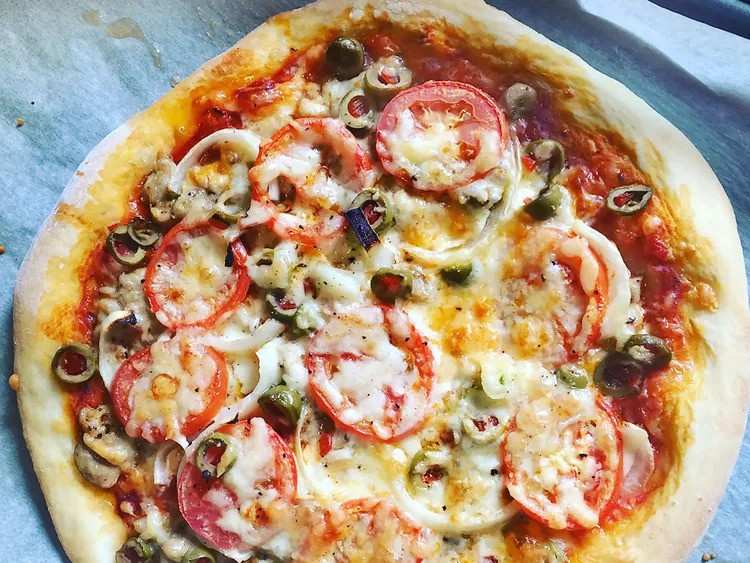

Homemade Pizza
Recipe for creating a Homemade Pizza
When it comes to cooking at home most of the time it feels like too much of an effort to go out of your way to make your own food whether it be healthy or unhealthy.
But seeing as cooking at home for yourself or maybe you and your partner, it can be a good habit to learn and commit to, saving you from spending money on ordering food online.
With this recipe there are very few ingredients and you most likely have these laying around at home.
This recipe is a Homemade Pizza, who doesn't like pizza? (besides those who are lactose intolerant of course.)
This is an easy recipe for those who are beginners, when it comes to cooking. A classic Italian dish,
a pizza which can be made easily in around 45 minutes with minimal ingredients with minimal effort needed in only 8 steps!
Ingredients
- 1 cup warm water (110 degrees F/45 degrees C)
- 1 (.25 ounce) package active dry yeast
- 1 teaspoon white sugar
- 2 ½ cups bread flour
- 2 tablespoons olive oil
- 1 teaspoon salt
Steps
- Gather all ingredients. Preheat oven to 450 degrees F (230 degrees C), and lightly grease a pizza pan.
- Place warm water in a bowl; add yeast and sugar. Mix and let stand until creamy, about 10 minutes.
- Add flour, oil, and salt to the yeast mixture; beat until smooth. You can do this by hand or use a stand mixer fitted with a dough hook to make it easier.
- Let rest for 5 minutes.
- Turn dough out onto a lightly floured surface and pat or roll into a 12-inch circle.
- Transfer to the prepared pizza pan.
- Spread crust with sauce and toppings of your choice.
- Bake in the preheated oven until golden brown, 15 to 20 minutes. Remove from the oven and let cool for 5 minutes before serving.